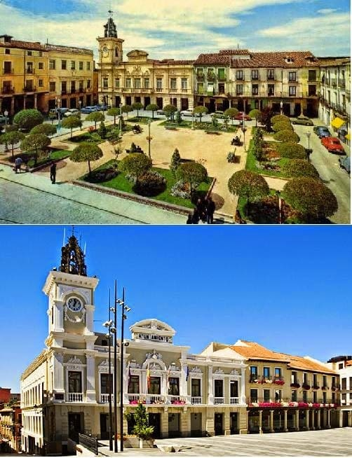

A diferencia de otras ciudades, a comienzos de este siglo es una de las ciudades más tranquilas, sin eventos relevantes. Las razones pueden estar en el carácter militar de la ciudad ya que cuenta con La Academia Militar de Ingenieros, el Cuartel de San Carlos, el Cuartel de Globos, el Fuerte de San Francisco. En el ámbito político el control de la vida local por el Conde de Romanones, cacique local de la época. Este señor era hijo del Marques de Villamejor, que destacaba por su gran riqueza y por su gran influencia en España, habiendo sido alcalde de Madrid en dos ocasiones y presidente del Senado.
Todos los edificios militares serán destruidos en la guerra civil española y no se llevará a cabo su restauración salvo la academia de ingenieros frente al palacio del infantado. Además se destruiría buena parte de la muralla que sería casi eliminada con posteriores alcaldes de la época franquista, quedando en la actualidad un pequeño resto de la muralla original frente al Torreón de AlvarFañez. En el plano económico cabe destacar la Fabrica de automóviles Hispano Suiza gracias a los amaños de contratos del famoso Conde. También aconteció el incendio de la academia militar en el año 1924 que supuso un gran golpe a la industria alcarreña.


En la guerra civil, Guadalajara fue una de las ciudades que más desgaste sufrió.
El palacio del infantado, símbolo de glorias pasadas fue incendiado por los bombarderos de la aviación alemana tras errar el blanco en el cuartel de San Carlos que sería completamente destruido.
Varios edificios importantes fueron así mismo destruidos, sin embargo el palacio del infantado sería restaurado tras la guerra Civil.
Guadalajara fue una de las pocas ciudades en las que el ejército republicano aguanto el envite de las tropas nacionales.
Tras el sublevamiento de varios generales encabezados por Manuel de Zarate sería rápidamente recuperada así como ciudades próximas a Madrid. Sería una de las ciudades que más tiempo estuvo del lado republicano, y no se libraría de los horrores de la guerra.
Debido a ser de las últimas ciudades en caer la ciudad no fue apenas apoyada por el régimen de Franco y sería una de las ciudades donde se pasaba hambre tras al guerra.
En este tiempo la ciudad apenas contaba con 15.000 habitantes.
Fue a partir de 1950 cuando Guadalajara iniciaría un incremento paulatino de la ciudad, expandiendo la ciudad más al sur, a partir del Paseo de las Cruces.
Dotando a la ciudad así mismo de un centro sanitario bien equipado y todo esto bajo el mandato de Pedro San Vázquez, médico y alcalde de Guadalajara que influyo bastante en el recuperación de la ciudad.
Se reformaría la plaza de toros, punto de referencia en los festejos de la ciudad.
Será a partir de 1960 cuando Guadalajara experimente un cambio sustancial de población, doblando su población en apenas 20 años.
Alcanzando los 60.000 habitantes en 1980. Este hecho se debe en gran medida al despoblamiento de los núcleos rurales.
En estas décadas se extenderá por el sur hasta la carretera Madrid Barcelona, construyéndose multitud de edificios de varias plantas desde el paseo de las cruces.
Se empezará a ensanchar la ciudad con grandes avenidas como la de Castilla y la del ejército.
Se edificara un nuevo hospital más allá de la A2, carretera que une Guadalajara con la capital, con recursos de los más avanzados de aquel entonces.
Debido al crecimiento de Madrid, Guadalajara pasará pronto a ser una ciudad de carácter residencial, estando a 60 minutos de Madrid ya sea mediante automóvil o mediante la línea del tren.
Ya que se doto de una red de cercanías al igual que otras capitales de provincia anexas como Segovia o Toledo.

Al comienzo de la transición democrática muchas de las calles de Guadalajara cambiarán de nombre y muchos lugares cambiarán su aspecto como el ayuntamiento de Guadalajara o la plaza de Santo Domingo.
Siendo eliminados numerosos espacios arbolados y sustituidos por granito o adoquines como la plaza del ayuntamiento.

Usando este sitio web aceptas nuestros Terminos y condiciones. Por favor Aceptar esto antes de usar el sitio web.
© 2016 - All Rights Reserved - Diseñada por Sergio López Martínez
El sitio se mantiene gracias a la publicidad, por favor Desactiva Adblock para seguir navegando
He desactivado Adblock![[Valid RSS]](https://www.feedvalidator.org/images/valid-rss-rogers.png "Validate my RSS feed")